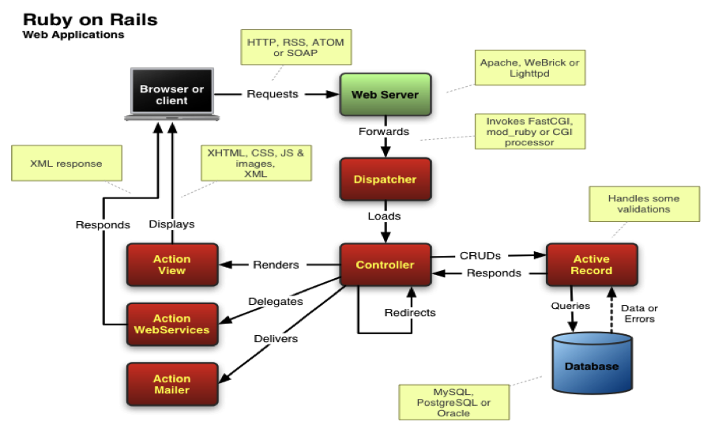
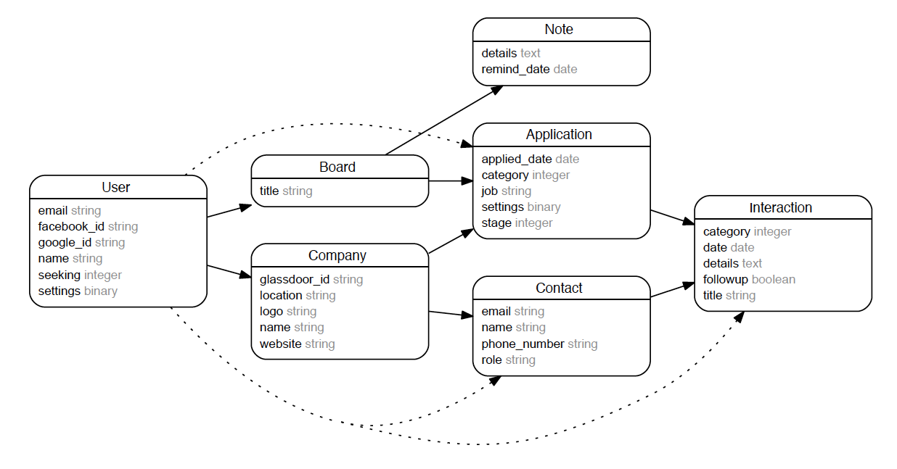
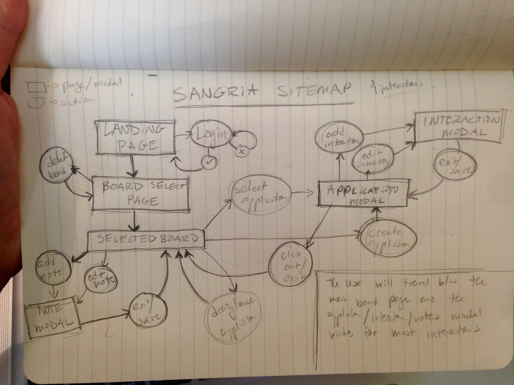

Architecture Overview.
This application follows the standard Ruby on Rails web application architecture pictured below. 
Detailed Design.
There are eight classes that we use to hold data about the user’s activities on the page. They are User, Board, Application, Interaction, Company, Contact, Note, and Token. The user can make a board, which in turn has notes or applications (which are for a company), and each application can have an interaction, and each interaction can have a contact that may belong to a company. The token serves to keep the user logged in.
As the user creates, edits, or deletes various entities like applications or interactions, we update the database with the corresponding data. We query information about companies from Glassdoor and when the user selects a company or fills the information themselves, we create a new company and save it to that user. In this way, a user can easily reuse companies they’ve already applied to without overlap from the companies from another user.
Ruby on Rails uses templates to render forms, and we edited these forms to generate our own custom forms to use. Most of the interacting the user makes with the web application is through the use of modals. So when a user clicks to add a new application, a modal pops up with a form, when a user wants to edit an interaction, a modal pops up with a form. We made a modal for each kind of action a user could take then we reuse that modal for each different kind of entity. As a user makes an action, we replace the contents of the modal with the corresponding contents to the object they’re interaction with.
So for example, if I want to edit an application with ID 12, when I click “Edit,” we make an AJAX call with jQuery to the application edit modal endpoint, we fill in the data for application 12, then we take the generated HTML and replace the old modal HTML with the updated information. In this way, we can use one modal to edit any application and simply update it on demand. However, what this also means is that any JavaScript hooks or event listeners that are used on the modals must be called again since the HTML itself is replaced with each AJAX call.
Data Storage.
We use PostgreSQL. There we store User data, Board data, Application data, Company data, Interaction data, and Contact data. The diagram shown below outlines our entity-relationship and what each table holds. Although we store companies, boards, and user data for everyone in the same database, the user can only view boards and companies that they added. This is to prevent garbage company data and to maintain privacy for boards. We also save Facebook and Google tokens for user authentication. We allow users to login using their Facebook account and Google account. Using the token, we verify their user id and match it with their record. We save our API keys for Facebook and Google in a credential file. The file is not uploaded to github for security reasons.
User Interface.
Sangria is meant to make organizing a user’s job-search as simple as possible, and its interface reflects that simplicity in its clean, unobtrusive design. We began by laying out a one-page interface with modal windows being the main form of transportation throughout the user tasks. We have four pages: landing page, login page, board overview page, and the selected board page. We also have three modal “pages” as well: the notes modal (located as a slide on the main page), the application modal, and the interaction modal screens. The User travels between the main board page and these three modal screens for almost all actions.
The User begins on the landing screen with the possibility of logging in with Google or Facebook in the top right corner, typical of login actions, brief information about the application, and a button prompting them to "Get Started." The user can either press the prompt button, which leads them to the login screen, or select to login via their prefered method, which also leads them to the login screen. Once they are logged in the prompt button will lead them to the board overview page.
Once at the board overview page the user will see a list of their current "boards" (which represent a particular job-search term) as well as the option to create a new board. If they are new users then there will be a board labeled "My First Board!" for them to enter and explore.
Once a board is selected they can either add/edit/delete a note through the note modal on the right side. This feature is available through swiping on a mobile device. Each application, if there are any created, is displayed as a “card” underneath each section or stage. A user can click and hold an application (on web only) to drag them between the different application stages (applied, interview, waiting, offer), add an application to any stage through the plus sign at the top of each section, or select an application to shift to the application modal. They also have the options to switch or delete boards, located at the top right.
From the application modal they have the option to view, edit, or delete the selected application. If they clock off the application modal they will go back to the main board view. They also have the option to add, view, delete, or edit an interaction. This takes them to the interaction modal, which is displayed directly on top of the application modal. From here a user can edit or delete the selected interaction. They also have the option to add a contact if they edit the interaction. If they click off of the interaction modal it goes back to the application modal. This concludes most of the major page interactions and actions the user can take on each page/modal.